https://bit.ly/FOP_ADTS_2026
Using artificial neural networks
to map real neural networks
Aravi Samuel
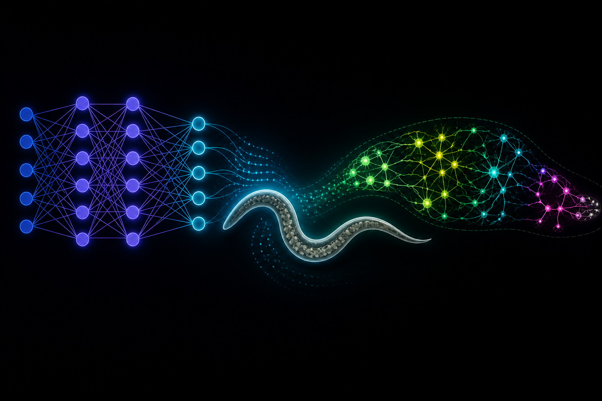
E. coli
Tracking cells

If life is getting better, enjoy it more.
If life is getting worse, don't worry about it.
Circuits from input to output

Caenorhabditis elegans
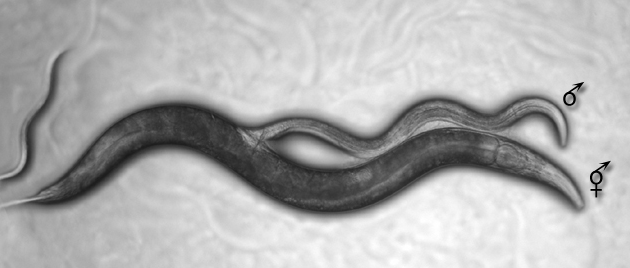
Circuits from input to output
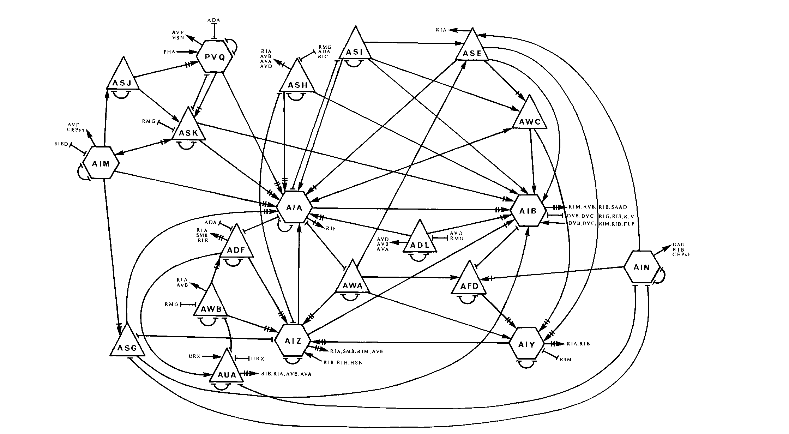
White et al. (1986)
Tracking neurons
Clark et al. (2007)

“Science is a bit like the joke about the drunk who is looking under a lamppost for a key that he has lost on the other side of the street, because that’s where the light is.”
- Noam Chomsky
Connectomics
Witvliet et al. (2021)
Bigger brains
Same topology

Witvliet et al. (2021)
More synapses, more connections

Stable, developmental, and variable connectivity

Connectomics
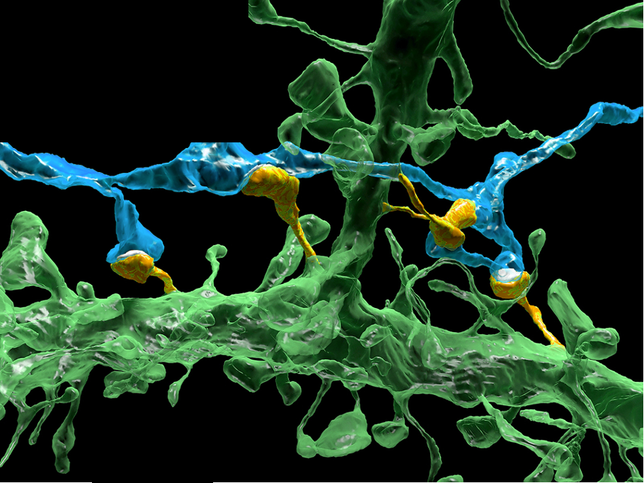
The problem:
mapping
tissue at millimeter scale
and
resolving
at nanometer scale
Mouse cortex
Karlupia et al. (2023)
Scanning Electron Microscopes
1 cubic millimeter
↓
4 nm × 4 nm × 30 nm per voxel
↓
2,000,000,000,000,000 pixels
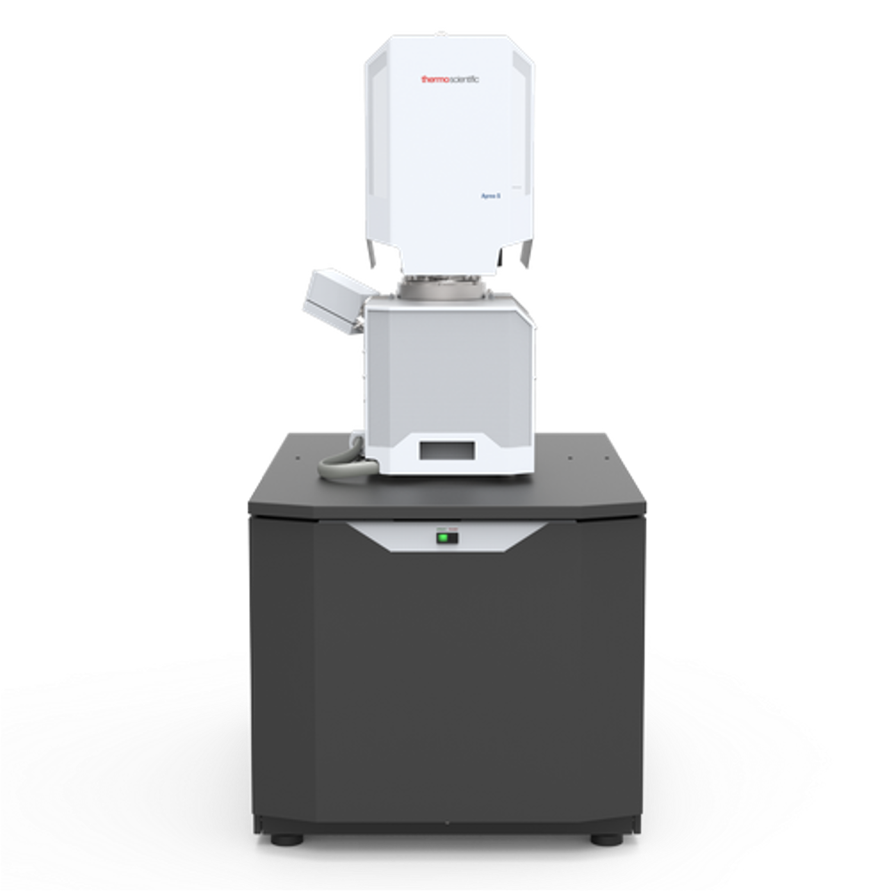
1 µs / pixel
↓
60 years
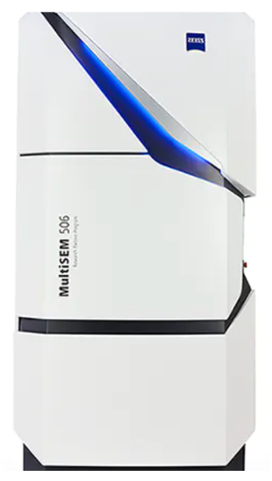
1 µs / pixel
with 61 beams
↓
~2 years
Fast, noisy images → lower segmentation quality
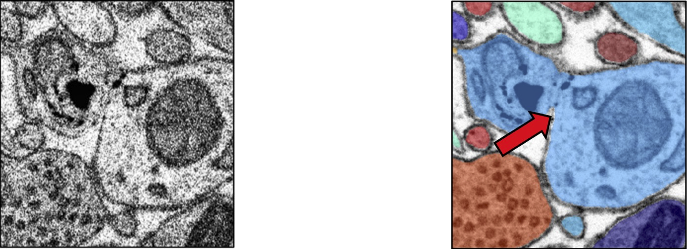
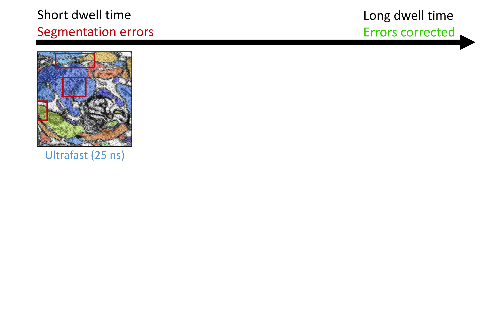
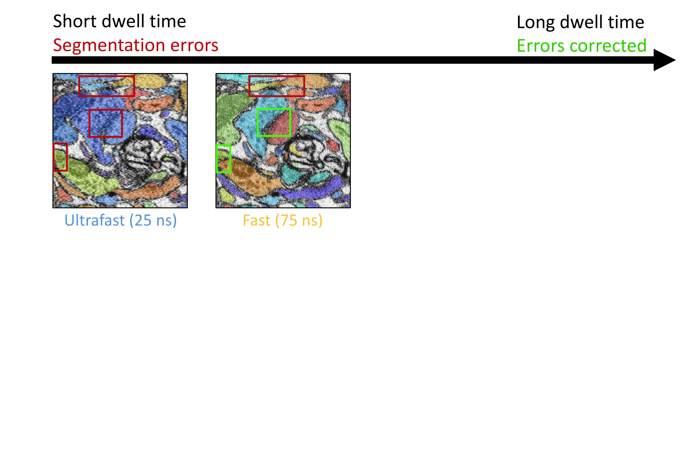
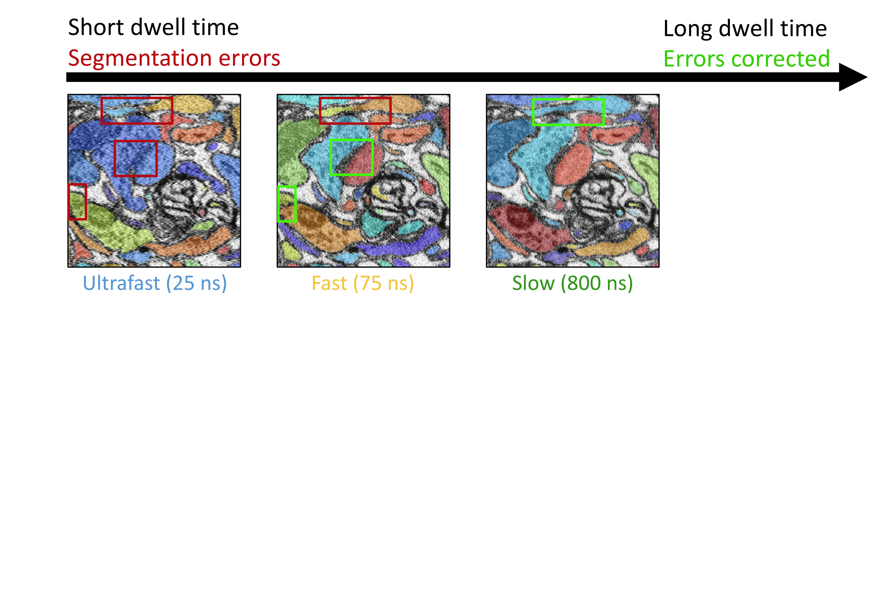
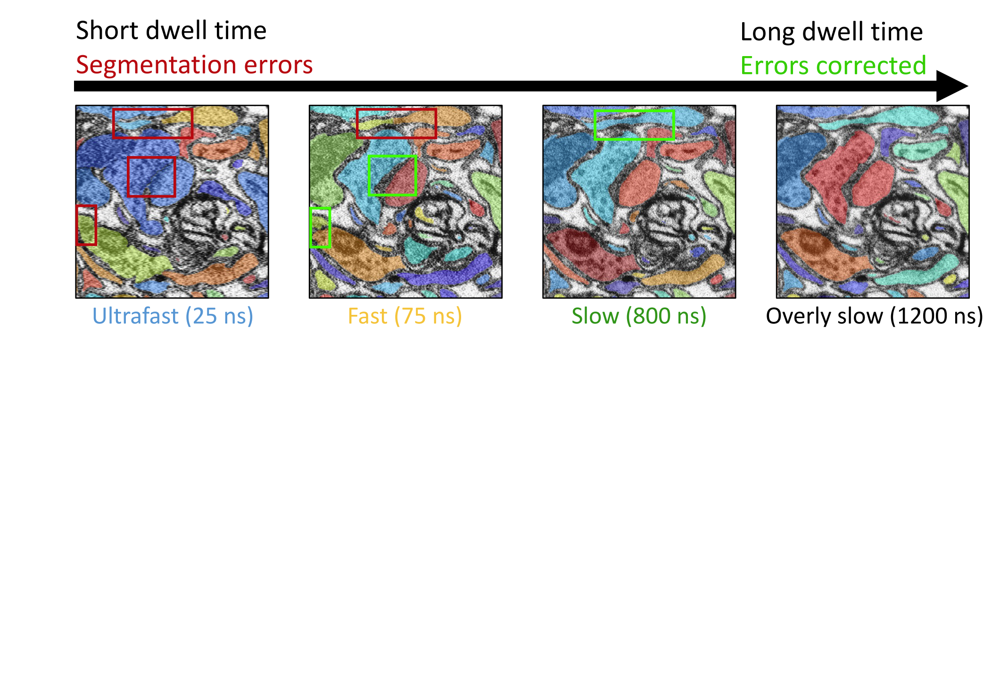
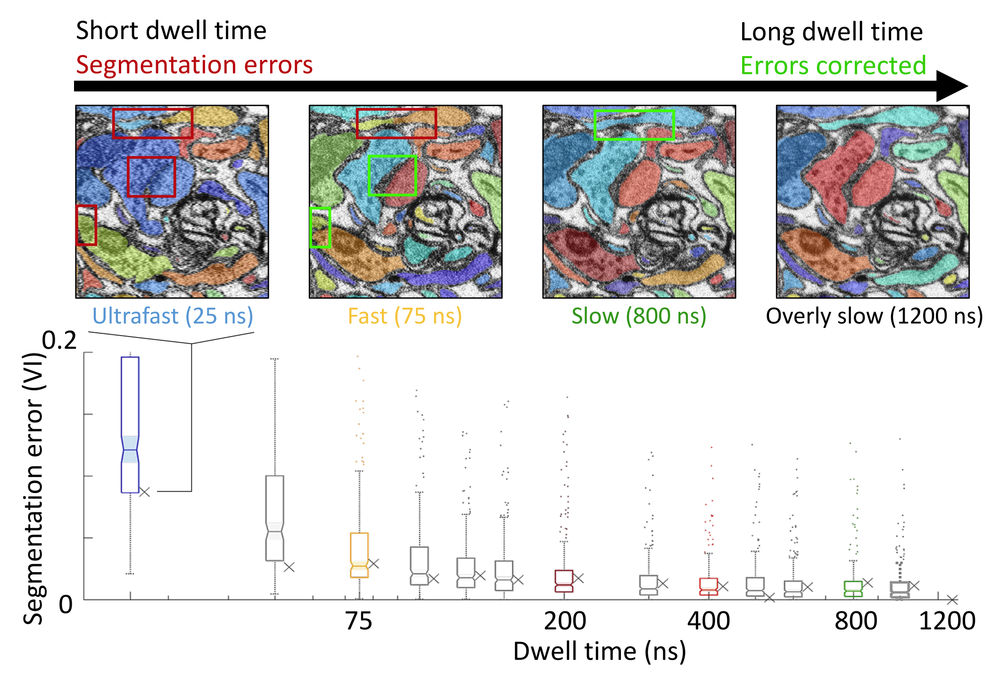
The idea in a 🥜
Use ultrafast imaging everywhere
Add slow imaging only where errors might occur
ML-trained "error network"
Trained with images containing segmentation errors
predict error prone regions
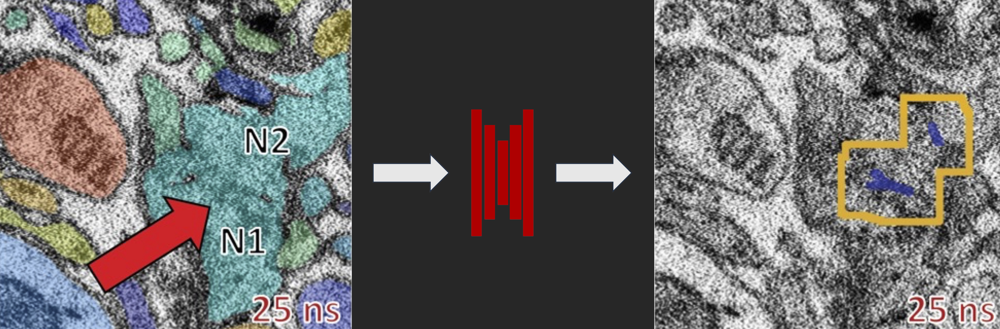
Automatically rescan error-prone regions
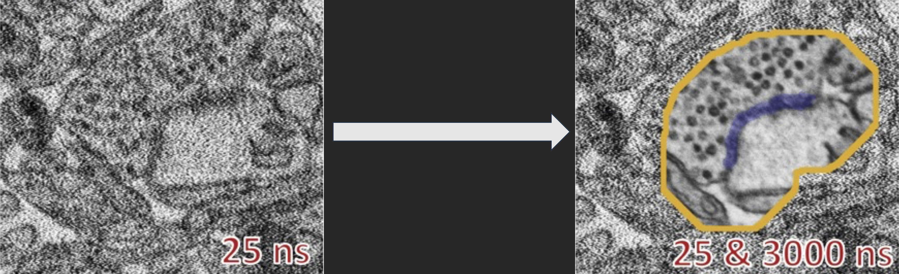
Rescans and fast scans are fused
Mouse cortex segmented with SmartEM
3D Segmentation from SmartEM
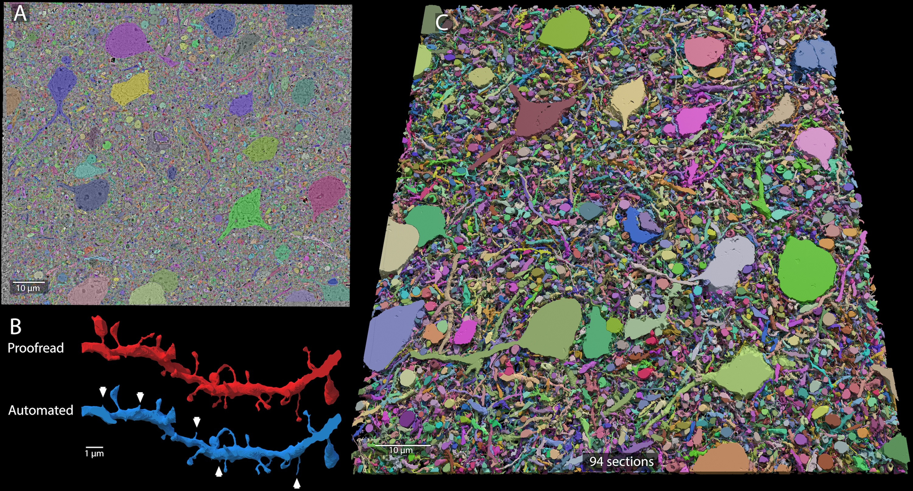
Same benchmark performance as state-of-the-art multibeam pipeline
Meirovitch et al. (2026)Chemotaxis

Bargmann and Horvitz (1993)
Microfluidic manifolds

Lin et al. (2023)
Manifold responses

Lin et al. (2023)
Brain-Wide Imaging during Chemotaxis
 Venkatachalam et al. (2021)
Venkatachalam et al. (2021)
Neuronal atlases
 Yemini et al. (2021)
Yemini et al. (2021)
Brain-wide Imaging
Freely-moving and immobilized worms
 Casademunt et al. (2026)
Casademunt et al. (2026)
Brain-wide differences between
immobilized and moving worms
 Casademunt et al. (2026)
Casademunt et al. (2026)
Focused differences between
chemotaxis and free navigation
 Casademunt et al. (2026)
Casademunt et al. (2026)
Functional mapping of olfactory sensorimotor circuit
 Casademunt et al. (2026)
Casademunt et al. (2026)
Functional mapping of olfactory sensorimotor circuit
 Casademunt et al. (2026)
Casademunt et al. (2026)